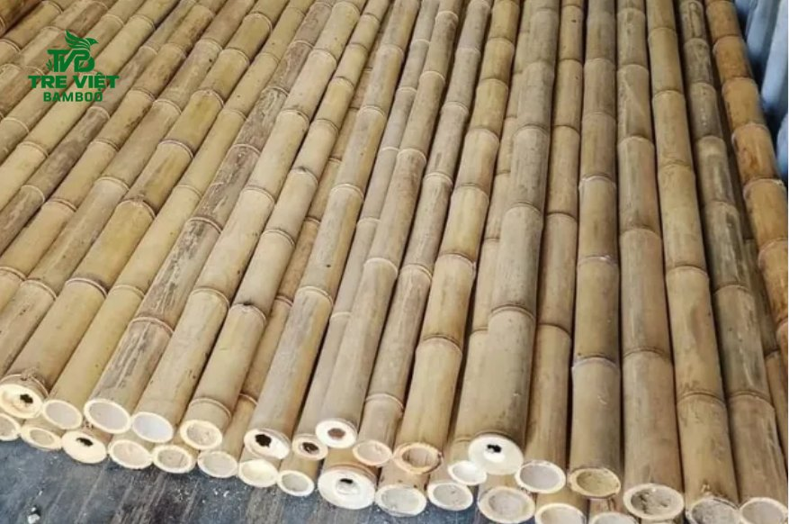
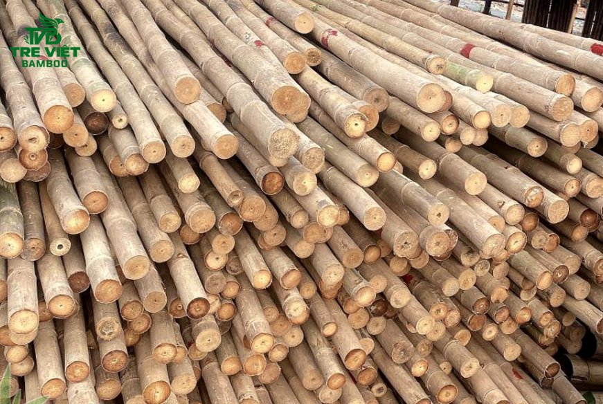
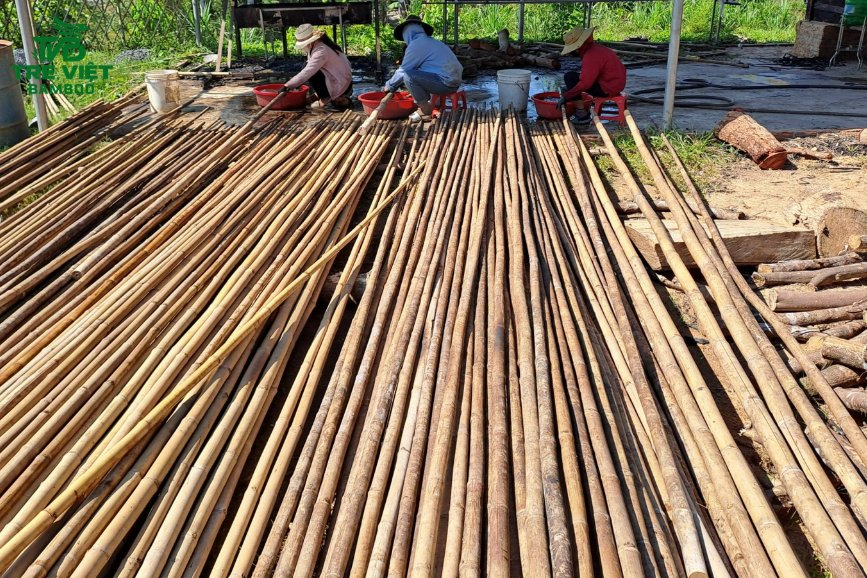
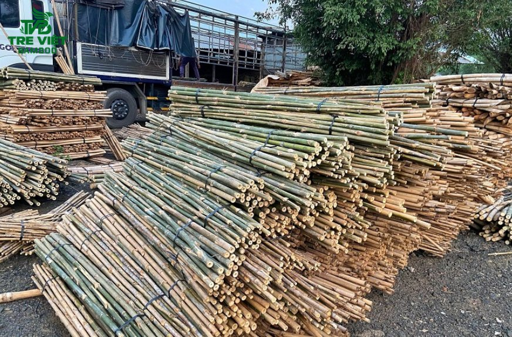
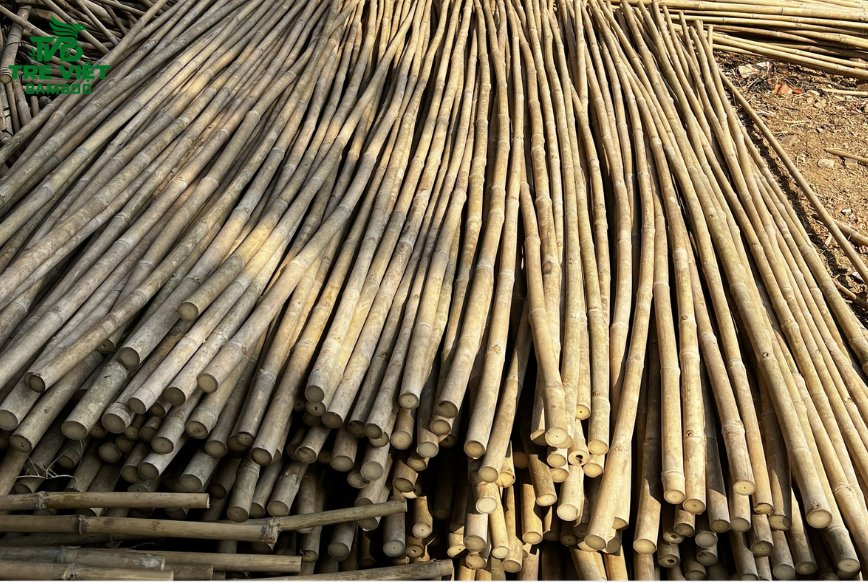
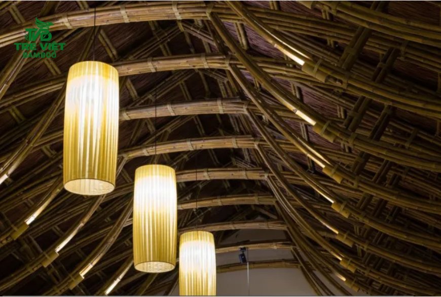

Tre tầm vông đã qua xử lý ngày càng được ưa chuộng trong thi công nhà tre, hàng rào, mái che và các công trình kiến trúc xanh nhờ đặc tính cứng chắc, dễ gia công và mang vẻ đẹp tự nhiên. Tuy nhiên, bên cạnh chất lượng vật liệu, bảng giá tre tầm vông đã qua xử lý cũng là yếu tố được nhiều chủ đầu tư, nhà thầu và đơn vị thi công quan tâm khi lập dự toán.
Vậy giá tre tầm vông năm 2026 phụ thuộc vào những yếu tố nào? Làm thế nào để lựa chọn nguyên liệu phù hợp với ngân sách và yêu cầu công trình? Hãy cùng Tre Việt Building tìm hiểu chi tiết trong bài viết dưới đây.
Ưu điểm của tre tầm vông khô đã qua xử lý mối mọt

Khác với tre tươi hoặc tre chỉ phơi khô tự nhiên, tre tầm vông đã qua xử lý được tuyển chọn và gia công nhằm giảm độ ẩm, hạn chế nguy cơ mối mọt và cải thiện độ ổn định của vật liệu. Tùy theo quy trình áp dụng, tre có thể được làm sạch, xử lý côn trùng, chỉnh thẳng và phơi khô trước khi xuất xưởng.
Đối với các công trình sử dụng tre trúc, lựa chọn nguyên liệu đã qua xử lý mang lại nhiều lợi ích thiết thực:
-
Hạn chế mối mọt và nấm mốc: Quy trình xử lý phù hợp giúp giảm nguy cơ hư hỏng do côn trùng và độ ẩm, góp phần duy trì chất lượng vật liệu.
-
Giảm nguy cơ nứt nẻ, cong vênh: Tre được làm khô và bảo quản đúng cách có độ ổn định tốt hơn trong quá trình gia công, lắp đặt và sử dụng.
-
Tiết kiệm thời gian thi công: Nhà thầu chủ động nguồn vật tư đã được phân loại, xử lý theo quy cách, giảm công đoạn chuẩn bị tại công trình.
-
Tối ưu chi phí dài hạn: Hạn chế hao hụt vật liệu và nguy cơ phải thay thế những cây tre bị hư hỏng sớm.
-
Đảm bảo tính đồng đều cho công trình: Việc phân loại theo chiều dài, đường kính và tình trạng vật liệu giúp quá trình thi công thuận lợi, nâng cao tính thẩm mỹ tổng thể.
Dù vậy, độ bền thực tế vẫn phụ thuộc vào chất lượng tre đầu vào, phương pháp xử lý, điều kiện lắp đặt và cách bảo quản. Đối với các hạng mục ngoài trời hoặc chịu lực, cần lựa chọn vật liệu và giải pháp thi công theo yêu cầu kỹ thuật cụ thể.
Bảng giá tre tầm vông đã qua xử lý tại Tre Việt Building 2026

Giá tre tầm vông không cố định cho mọi quy cách. Mỗi loại cây có chiều dài, đường kính, độ thẳng và tình trạng xử lý khác nhau nên mức giá cũng có sự chênh lệch. Ngoài ra, số lượng đặt hàng, yêu cầu gia công và địa điểm giao hàng cũng ảnh hưởng đến tổng chi phí.
Bảng giá tre tầm vông tham khảo theo quy cách
Dưới đây là mức giá tham khảo theo một số quy cách tre tầm vông được công bố trên website Tre Việt Building. Đây là cơ sở để khách hàng dự trù ngân sách ban đầu; giá áp dụng riêng cho tre khô đã qua xử lý cần được xác nhận theo đúng quy cách và yêu cầu đơn hàng.
|
Quy cách tre tầm vông |
Đường kính tham khảo |
Giá tham khảo |
|
Dài 2m |
2–3cm |
20.000–24.000 đồng/cây |
|
Dài 2,5m |
2,5–3cm |
20.000–25.000 đồng/cây |
|
Dài 3m |
2,5–3cm |
25.000–30.000 đồng/cây |
|
Dài 4m |
2,5–4cm |
40.000–60.000 đồng/cây |
Lưu ý: Đây là mức giá tham khảo theo quy cách được đăng tải trên website, không phải báo giá cố định cho mọi loại tre đã qua xử lý trong năm 2026. Giá thực tế có thể thay đổi theo chất lượng cây, đường kính, phương pháp xử lý, số lượng đặt mua và chi phí vận chuyển. Vui lòng liên hệ Tre Việt Building để xác nhận bảng giá mới nhất trước khi đặt hàng.
Những yếu tố ảnh hưởng đến giá tre tầm vông đã qua xử lý
Để lựa chọn vật liệu phù hợp và dự toán ngân sách chính xác hơn, khách hàng nên xem xét các yếu tố sau:
Chiều dài và đường kính thân tre

Chiều dài và đường kính là hai yếu tố quan trọng quyết định giá bán. Những cây tre có kích thước lớn, thân tương đối thẳng và đáp ứng yêu cầu riêng của công trình thường có mức giá khác với loại quy cách nhỏ. Vì vậy, khách hàng nên xác định trước kích thước cần dùng để tránh phát sinh chi phí cắt ghép hoặc gia công.
Chất lượng nguyên liệu đầu vào
Độ tuổi khai thác, độ đặc của thân, tình trạng mắt tre và mức độ đồng đều ảnh hưởng đến khả năng gia công cũng như mục đích sử dụng. Với các hạng mục yêu cầu tính thẩm mỹ cao, việc lựa chọn cây ít khuyết tật, đồng đều về màu sắc và kích thước sẽ giúp công trình hoàn thiện đẹp hơn.
Phương pháp và mức độ xử lý
Tre tươi, tre khô tự nhiên và tre đã qua xử lý bảo quản có thể có mức giá khác nhau. Các công đoạn như làm sạch, chỉnh thẳng, xử lý mối mọt và làm khô đều cần thời gian, nhân công và điều kiện thực hiện phù hợp. Khi hỏi giá, khách hàng nên xác nhận rõ sản phẩm đã được xử lý ở mức nào thay vì chỉ so sánh đơn giá giữa các nhà cung cấp.
Số lượng đặt hàng

Đối với đơn hàng số lượng lớn, nhà cung cấp có thể xây dựng phương án giá phù hợp hơn tùy theo nguồn hàng, quy cách và kế hoạch giao nhận. Nhà thầu nên tổng hợp số lượng theo từng kích thước, đồng thời dự trù tỷ lệ hao hụt hợp lý để việc đặt vật tư được chủ động.
Chi phí vận chuyển và gia công
Tổng ngân sách không chỉ bao gồm tiền mua tre mà còn có thể phát sinh chi phí cắt khúc theo yêu cầu, đóng bó, bốc xếp và vận chuyển đến công trình. Với dự án ở xa hoặc cần giao theo nhiều đợt, nên trao đổi trước về lịch giao hàng và chi phí liên quan để hạn chế phát sinh ngoài dự kiến.
Cách chọn quy cách tre tầm vông phù hợp với công trình

Mỗi hạng mục có yêu cầu khác nhau về kích thước, độ bền và tính thẩm mỹ. Do đó, không nên lựa chọn tre chỉ dựa trên giá rẻ mà cần cân nhắc công năng sử dụng.
-
Làm hàng rào, giàn trang trí: Ưu tiên quy cách đáp ứng chiều cao, khoảng cách lắp đặt và thiết kế tổng thể.
-
Làm vách ngăn, ốp trần, ốp tường: Chú trọng độ đồng đều, màu sắc và độ thẳng của thân tre để tạo bề mặt hoàn thiện đẹp.
-
Làm chòi nghỉ, mái che, nhà tre: Cần lựa chọn vật liệu theo bản vẽ, tính toán kết cấu và yêu cầu chịu lực; không nên chỉ dựa vào đường kính để đánh giá khả năng chịu tải.
-
Thi công resort, nhà hàng, quán cà phê: Nên thống nhất quy cách, màu sắc và phương án xử lý ngay từ đầu để đảm bảo sự đồng bộ giữa các khu vực.
Liên hệ mua tre tầm vông đã qua xử lý chất lượng, giá tốt tại Tre Việt Building

Để có được công trình tre trúc bền đẹp, việc lựa chọn nguồn nguyên liệu phù hợp cần đi cùng phương án thiết kế và thi công đúng kỹ thuật. Tre Việt Building cung cấp nguyên liệu tre trúc và giải pháp thiết kế, thi công cho nhiều loại công trình, từ hạng mục trang trí đến không gian nhà hàng, quán cà phê và khu nghỉ dưỡng.
Khi liên hệ Tre Việt Building, khách hàng có thể trao đổi cụ thể về:
-
Quy cách vật liệu: Chiều dài, đường kính, độ thẳng, màu sắc và yêu cầu gia công.
-
Tình trạng xử lý: Xác nhận phương pháp xử lý, mức độ khô và yêu cầu bảo quản phù hợp với mục đích sử dụng.
-
Số lượng và tiến độ: Lập danh sách vật tư theo từng quy cách để thuận tiện cho việc dự toán và giao nhận.
-
Báo giá theo nhu cầu thực tế: Tư vấn phương án phù hợp với ngân sách, quy mô công trình và địa điểm giao hàng.
Nếu bạn đang tìm kiếm bảng giá tre tầm vông đã qua xử lý năm 2026, hãy liên hệ Tre Việt Building để được tư vấn quy cách, kiểm tra tình trạng vật liệu và nhận báo giá phù hợp với đơn hàng nhé!
CÔNG TY TRÁCH NHIỆM HỮU HẠN TRE VIỆT BUILDING
Địa chỉ: 917 Phạm Văn Đồng, Phường Linh Xuân, Thành phố Hồ Chí Minh
Nhà máy sản xuất: Phú Hợp B, Xã Phú Lâm, Đồng Nai.
Điện thoại – Zalo: 087.6915.999
Email: info@treviet.com.vn
treviet23@gmail.com